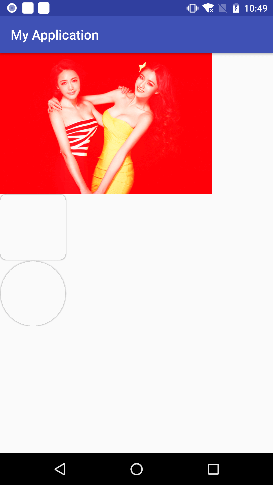

https://developer.android.com/design/material/index.html?hl=zh-cn 建议看一下官方文档，这一章节就简单说一下，这一张主要针对不常用的部分
Meterial design 主题
三种默认主题1
2
3@android:style/Theme.Material(dark version)
@android:style/Theme.Material.Light(light version)
@android:style/Theme.Material.Light.DarkActionBar
Palette
是一个取色器，可以根据不同的图片进行取色，然后设置相关的主题
- Vibrant(充满活力的)
- Vibrant dark(充满活力的 黑色)
- Vibrant light(充满活力的 亮色)
- Muted(柔和的)
- Muted Drak(柔和的黑)
- Muted Light(柔和的亮)
视图与阴影
阴影
Android 5.0以后新添加了一个属性z， android：elevation=xxdp 就会有一个高度，这样就会有一个投影，类似一个灯泡在上方 下方有一个桌子，地上就会有阴影。
Tinting和Clipping
Tinting 着色
修改Alpha遮罩修改图像的颜色1
2
3
4
5
6
7
8
9
<ImageView
android:id="@+id/iv"
android:src="@mipmap/pg_11111111111"
android:layout_width="match_parent"
android:elevation="5dp"
android:tint="#ff0000"
android:tintMode="add"
android:layout_height="match_parent" />
Clipping 裁切
ViewOutlineProvide
代码1
2
3
4
5
6
7
8
9
10
11
12
13
14
15
16
17
18
19
20
21
22
23
24
25
26
27
28
29
30
31
32
public class MainActivity extends AppCompatActivity {
@Override
protected void onCreate(Bundle savedInstanceState) {
super.onCreate(savedInstanceState);
setContentView(R.layout.activity_main);
final TextView tvCircle= findViewById(R.id.tv_circle);
final TextView tvRect= findViewById(R.id.tv_rect);
ViewOutlineProvider viewOutlineProvider1=new ViewOutlineProvider() {
@Override
public void getOutline(View view, Outline outline) {
outline.setOval(0,0,tvCircle.getWidth(),tvCircle.getHeight());
}
};
ViewOutlineProvider viewOutlineProvider2=new ViewOutlineProvider() {
@Override
public void getOutline(View view, Outline outline) {
outline.setRoundRect(0,0,tvRect.getWidth(),tvRect.getHeight(),30);
}
};
tvCircle.setOutlineProvider(viewOutlineProvider1);
tvRect.setOutlineProvider(viewOutlineProvider2);
}
}
布局
1 | <?xml version="1.0" encoding="utf-8"?> |

列表与卡片
- RecyclerView
- CardView
这两个非常的常用这里就不讲了
过度动画
提供了三种过度动画
- 进入
- explode(分解) 从屏幕中间进出,移动视图
- slide(滑动) 从屏幕边缘进出,移动视图
- fade(淡出) 通过改变透明度达到添加或者移除视图
- 退出
- explode(分解) 从屏幕中间进出,移动视图
- slide(滑动) 从屏幕边缘进出,移动视图
- fade(淡出) 通过改变透明度达到添加或者移除视图
- 共享元素
- changeBounds 改变目标视图的布局边界
- changeClipBounds 建材目标是土边界
- changeTransform 改变目标视图的缩放比例和旋转角度
- changeImageTransform 改变目标图片的大小和缩放比例
A进入B 进入和退出
A activitystartActivity(intent，ActivityOptions.makeSceneTransitionAnimation(this),toBundle())
B activity getwindows.requestFeature(window.feature_content_transitions)
B activity getwindowssetEnterTransition(new Explode())
B activity getwindowssetExitTransition(new Explode())
A进入B 转场动画
对需要共享的元素添加属性androidxref:transitionName="xxx"
如果只有一个需要共享startActivity(intent，ActivityOptions.makeSceneTransitionAnimation(this),toBundle())
如果多个需要共享startActivity(intent，ActivityOptions.makeSceneTransitionAnimation(this，Pair.create(view,"share"),，Pair.create(fab,"fab")),toBundle())
动画效果
水波纹
Circular Reveal
1 | /** |
Vuew state changes animation
- stateListAnimator
- animated-selector